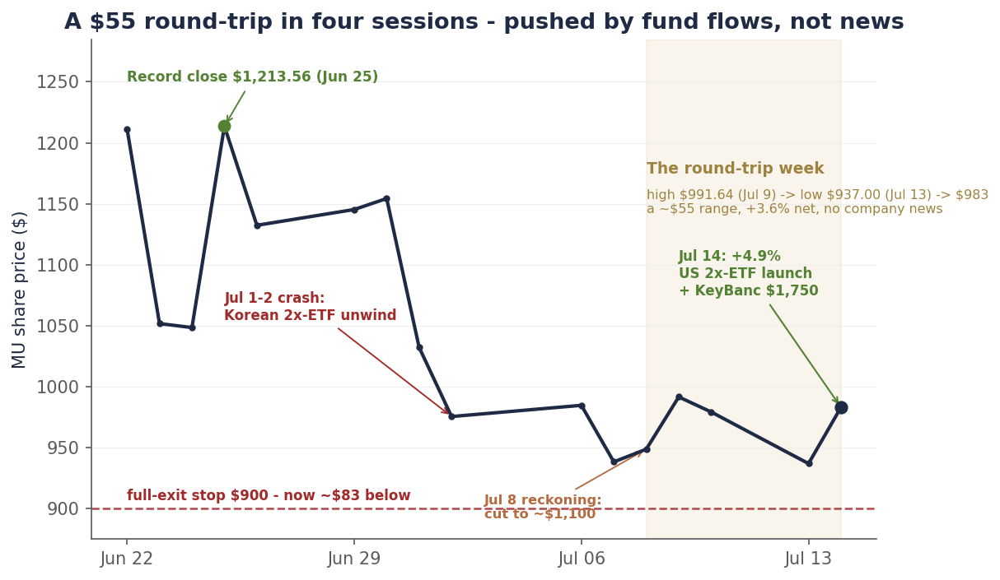
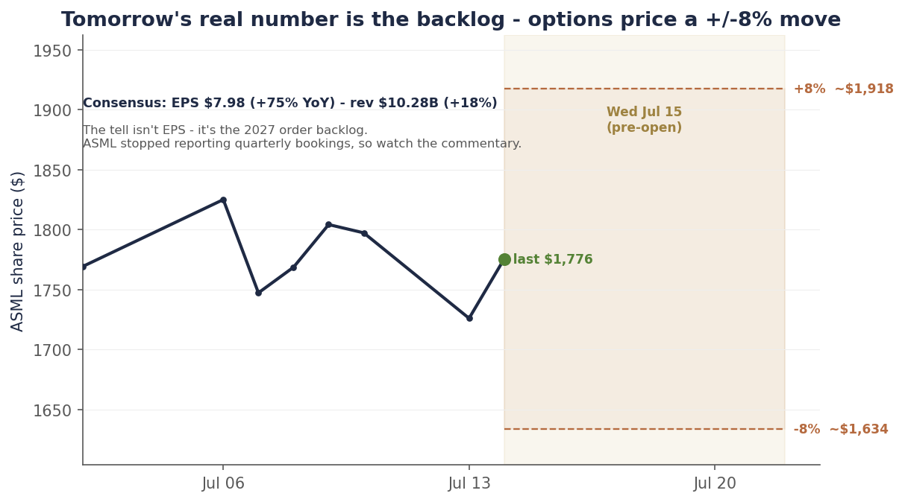

Single-name update · Memory · The rollercoaster
Micron round-tripped again. KeyBanc raised its target to $1,750. We didn’t.
Six days ago we published the reckoning and cut Micron a third time, to ~$1,100. Since then the stock has done this: $948.80 close → $991.64 → $979.30 → $937.00 → $983.12 — up 4.5%, a two-day slide to a new-low retest below where we cut it, then up 4.9% today. Four sessions, a $55 range, and a net move of about +3.6%. There was no earnings release, no guidance, no product news in that window. What actually moved Micron was the same thing we said would keep moving it: fund flows, not fundamentals.
You could see it cleanest in the bookend. The July 1–2 crash was a Korean leveraged-ETF unwind; today’s rip was the mirror image — US 2× single-stock ETFs launched on SK hynix, its ADR jumped more than 25%, and the whole complex rose with it (the memory basket +7%, SanDisk +5%, Micron +4.9%). Same instrument, opposite sign, two weeks apart. And into that noise the sell side got loud: KeyBanc raised its Micron target to $1,750, above where our own base sat in June, while Citi reaffirmed Buy at $1,400. Step back and the Street runs from a Goldman-and-us $1,100 up to a $2,000 high (Cantor, Susquehanna), average near $1,500 — with not one Sell on the tape.
So here is the honest tension, stated plainly. The Street is raising as we are cutting. We do not think they are wrong about demand — the demand is spectacular, and Micron just committed $250 billion to prove it. We think they are wrong about what Micron keeps. Our base stays ~$1,100 — the low end of the range, where only Goldman’s Neutral keeps us company; the runner still sits behind the $900 line, now ~$83 away after the bounce bought us room. And the argument does not get settled by an upgrade. It gets settled tomorrow morning, when ASML reports and the options are pricing a ±8% move.
Chart 1 — The round-trip week
A $55 swing in four sessions on no company news — crashed by a Korean ETF unwind, then lifted by a US ETF launch.

Daily closes, June 22–July 14, 2026. From the June 25 record ($1,213.56) the stock is down ~19%; over the four sessions since our July 8 reckoning it swung through a ~$55 range to close ~4% higher, on no company news. Source: bpleon price feed.
The week that swung $55 on no news
Start with what did not happen. Between the July 8 close and today there was no Micron earnings report, no guidance revision, no HBM qualification headline, no capex announcement from a major customer. On a company-news basis, the week was empty. And yet Micron bounced 4.5% Thursday to $991.64, gave it all back and more into Monday’s $937.00 — a close below the level we cut our target at — then rallied 4.9% today to $983.12. A $55 high-to-low range, whipsawed through and back, to end just 3.6% above where the week began. This is not what a stock does when new information is arriving. It is what a stock does when it is being pushed around by money that has to move regardless of the news.
The clearest evidence is the bookend that opened and closed the whole episode. We wrote on July 5 that the original crash was mechanical — a forced unwind of Korean leveraged single-stock ETFs, roughly $9 billion of price-insensitive selling that had nothing to do with memory demand. Today the machine ran in reverse. Three new US leveraged single-stock ETFs on SK hynix began trading — GraniteShares’ 2× long and 2× short (SKUU and SKDD) and ProShares’ 2× long (SKHU) — and the launch mechanics did what launch mechanics do: SK hynix’s New York-listed ADR jumped more than 25% to a fresh high near $194, and the buying spilled straight across the complex. Micron rose about 5% (helped by a KeyBanc target raise the same morning), the Roundhill memory basket (ticker DRAM) about 7%, SanDisk about 5%. Same derivative structure that crushed memory on July 1, now inflating it on July 14. If you needed proof that the tape is a flow story in the short run, the market just drew it for you twice.
The Street blinked — up
Into that noise, the sell side chose today to get bullish. KeyBanc’s John Vinh raised his Micron price target to $1,750 and kept an Overweight rating — a call KeyBanc framed as roughly 87% upside to Monday’s close — on strong data-center demand, DRAM and NAND contract prices rising double digits through year-end, and high-bandwidth memory prices he expects to double over the coming year. Citi reaffirmed its Buy at $1,400. Step back and the average published target still sits near $1,500 (the aggregators range from roughly $1,320 to $1,570 depending on the day), and after a week in which the stock made a new closing low, there is still not a single Sell rating on the name.
Now hold that next to our own history on the stock, because the picture is almost too neat. In June our base target was $1,500 — effectively the same number as the Street’s average. Since then we have walked it down twice, to ~$1,300 on July 2 and ~$1,100 last week, while the Street held near $1,500 and its most aggressive voices sat at $2,000. We started at the consensus and left it. Our ~$1,100 now sits at the low end of the published range — Goldman is down here with us, at a Neutral $1,100, but it is the only company we have. Every other rating is a Buy, climbing from Morgan Stanley’s $1,200 through Citi’s $1,400 and KeyBanc’s fresh $1,750 to a $2,000 Street high — nearly double our number.
Chart 2 — Us versus the Street
We started at the Street’s average and walked to $1,100. The Street held near $1,500 and its high went to $1,750. Someone’s number is wrong.
![A 12-month price-target map. Micron trades near $983 today. Our target path walks down from $1,500 (June) through $1,300 (July 2) to a solid marker at ~$1,100 — the low end of the range. On the Street row, Goldman's Neutral sits at $1,100 too (a dotted line connects it to our number), then Morgan Stanley $1,200, Citi $1,400, the average ~$1,486 inside a shaded $1,316–$1,569 range, KeyBanc $1,750, and a $2,000 Street high (Cantor, Susquehanna). Annotation: zero Sells and one Hold (Goldman); we sit at the low end, level with Goldman.](assets/reports/mu-rollercoaster-2026-07-14-c2-street.png)
Published 12-month targets as of July 14, 2026. Our ~$1,100 base sits at the low end of the range — level with Goldman’s Neutral $1,100 and below every Buy (Morgan Stanley $1,200, Citi $1,400, KeyBanc’s fresh $1,750, up to a $2,000 high); the Street average (~$1,486) is roughly where our own call began in June. Consensus via Benzinga, MarketBeat and stockanalysis; firm targets per company notes. Source: bpleon research.
The uncomfortable question, which we will not dodge, is who is early-cycle-right and who is late-cycle-loud. When you are sitting at the low end of the Street and the tape is ripping, you have to be able to say precisely why you are still there. So here it is.
Why we’re comfortable at the low end
The most important thing to say first is what this is not. It is not a demand call. We think KeyBanc is broadly right that data-center memory demand is strong and that HBM pricing has room to run — that is the whole reason we stayed long the memory boom through a basket. Our disagreement is narrower and, we think, more durable: it is about how much of that boom Micron the equity actually captures, and what multiple you should pay for it near a cycle peak. Four things, none of which requires the quarter to be bad:
- Micron capped its own upside; the basket did not — and now the competitor is listed here. Micron’s ~$100B in strategic customer agreements traded price ceilings at second-quarter levels for a contracted floor and binding volumes. Good risk management — but it means the very price increases KeyBanc is excited about flow to Micron only partially, while SK hynix, which removed its ceilings, keeps more of them. Last week we said Friday’s SK hynix listing would end Micron’s only-US-listed-memory scarcity premium. It listed on schedule, and within days of its debut it had leveraged ETFs and a 20%-plus day. US investors can now own the un-capped HBM leader directly. The scarcity premium isn’t fading; it’s gone.
- If HBM really doubles, the cleaner way to own it may not be Micron. Take KeyBanc’s bull input at face value — HBM prices double over the next year. The question that decides Micron’s share of that is HBM4, and the supply-chain reads are not flattering: estimates put SK hynix at 60–70% and Samsung at 25–30% of Nvidia’s Vera Rubin HBM4 allocation, leaving Micron in the ~5–10% range, down from ~20–25% in HBM3E, after reports its HBM4 samples ran slower pin speeds. A doubling in HBM that Micron largely doesn’t participate in is a bull case for SK hynix and the basket, not for the single stock. The bullish memory thesis and a cautious Micron thesis are not in conflict — they can both be true, and we think they are.
- Single-digit is the top signature, not the bargain. At $983.12 Micron trades near 6.9× the ~$143 the Street models for FY27 — which reads cheap only if that estimate holds. Even UBS, among the most bullish on the Street, models EPS fading from ~$143 toward ~$117 by 2029. A single-digit forward multiple on a hyper-cyclical near a capex peak is the classic top-of-cycle valuation, the market’s way of saying it does not believe the peak earnings are durable. The Street’s $1,500 targets apply a pre-crash multiple to intact estimates; the gap closes through target cuts that have not started.
- The macro is a lid the bull case needs lifted. The memory bull case is, at bottom, a bet that the market will pay a higher multiple for peak cyclical earnings. The first FOMC minutes of the Warsh era point the other way — a hike-biased Fed, with roughly half the committee penciling at least one 2026 increase. Rising-rate regimes compress multiples on long-duration equities, and they land hardest on exactly the kind of stock the market is already refusing to re-rate. You do not get multiple expansion on a cyclical while the Fed is leaning into a hike.
What would make us wrong — and why we’re not short
A low target is not a short thesis, and intellectual honesty means steelmanning the other side, because there is a real one. Five days ago Micron stood up in Clay, New York and raised its US investment commitment to more than $250 billion through 2035 — up to four New York fabs, a first concrete pour more than a quarter ahead of schedule, and, by its own count, more than 90,000 US jobs — plus $3 billion to shore up the domestic supply chain. That is not the body language of a company that thinks the cycle is about to roll; it is the largest private investment in New York State history. The same CEO whose scheduled $32.7 million share sale we flagged last week is the one committing a quarter-trillion dollars to more memory. If demand keeps compounding and Micron re-qualifies HBM4 share, our caution is what’s wrong, and the stock goes to our $1,550 bull case or beyond. That is precisely why we hold the runner rather than short the name.
So the position hasn’t moved, and neither has the line. We booked roughly 60% of the position into the $950–$1,200 June run-up; the ~40% runner sits behind a single pre-committed rule — a close below $900 and we are out in full. The bounce has actually helped the discipline here: the stop is now ~$83 away, versus ~$49 at last week’s close, and we did not move it up to chase — a stop only works if it stays put whether the stock is coming toward it or running from it. We did not add on the pop, and we are not front-running tomorrow’s ASML print. What we own alongside the runner is the memory basket and a new ASML position, both bought into the crash, both chosen precisely so we don’t have to bet the boom on the one company that capped itself.
| Item | Status |
|---|---|
| As of | July 14, 2026 close |
| Rating | HOLD the residual — no add on the bounce, no discretion on the stop |
| Price | $983.12 close (+4.9% today; four-session range $937.00–$991.64; −19.0% from the June 25 record) |
| Base PT | ~$1,100 (unchanged from July 8; cut from ~$1,300 on Jul 2, from $1,500 in June) — the low end of the range, level with Goldman’s Neutral $1,100; prob-weighted ~$1,070 |
| Bull / Bear | ~$1,550 (25%; plateau holds, HBM4 re-qualified) / ~$625 (30%; equity-peak window, 200dma floor) |
| Street | Avg ~$1,486 (~$1,320–$1,570); high $2,000 (Cantor, Susquehanna); KeyBanc raised to $1,750 (Jul 14); Goldman Neutral $1,100 · MS $1,200 · Citi $1,400; zero Sells, one Hold |
| Valuation | ~6.9× FY27 consensus EPS (~$143) — single-digit is the top signature, not the bargain |
| Position | ~60% booked $950–$1,200; holding the ~40% residual (15 shares) |
| Stop | Close below $900 = full exit (~8.5% below; was ~5% last week) — unchanged, not raised on the bounce |
| Related book | Hold the DRAM basket + ASML initiated into the crash (not more MU); ASML initiation note upcoming |
| Thesis breaks | Confirmed HBM4 share loss; Q3 contract prints below TrendForce +13–18%; a 200dma break (mid-$500s) = cycle rolled, cut to core |
Tomorrow settles the argument
An analyst raising a target does not resolve the debate on this tape; a number does. Tomorrow morning, before the US open, ASML reports Q2 — and it is the most important read the whole complex gets this month. Consensus is ~$7.98 in EPS (up roughly 75% year over year) on ~$10.28 billion of revenue (up ~18%), against the company’s own guide of €8.4–9.0 billion at 51–52% gross margin. But the earnings line is not the tell. ASML stopped disclosing quarterly bookings, so the market will be reading management’s commentary for one thing: how booked the 2027 order backlog is. Bank of America went into the week arguing that 2027 is effectively sold out already. If the commentary confirms it, the “peak-out” fear that has knocked the semiconductor index as much as 16% off its June high loses its foundation, and every memory multiple — including the one we’re cautious on — has to be revisited higher. If the tone is cautious, the peak-out crowd wins the argument, and our low target looks early rather than wrong.
Chart 3 — What tomorrow tests
The options market is bracing for a ±8% swing — twice ASML’s usual move — because the backlog, not the EPS, decides whether the AI-capex cycle extends into 2027.

ASML daily closes into the July 15 print; forward band shows the ~±8% move the options are pricing (versus a ~4% average over the last four quarters). ASML itself isn’t a free lunch — it trades ~41× forward and carries its own valuation bears — which is why we initiated it as accumulate-on-weakness, not a chase. Source: bpleon price feed; consensus via Zacks/company guidance.
That is the read-through chain, and it is why we own ASML through it: bookings tomorrow → is 2027 capex actually locked → does memory’s cycle have another leg → is our multiple-compression call early or right. ASML is the one name that gets paid on both branches — if memory stays tight, its tools are the bottleneck; if supply finally answers, it sells the tools that answer it. We are publishing our view the night before the number lands, which is the whole point of having one. We’ll mark the book to whatever prints — the same way we did last week, and the same way we’ll do it tomorrow.
Disclosure: I/we have beneficial long positions in the shares of MU and ASML and in a memory-sector ETF (ticker DRAM) through stock ownership. The Micron position was reduced by roughly 60% through a disciplined scale-out into the June rally; a residual is retained behind a stop, as described above. The ASML and ETF positions were established recently; an ASML initiation note with full thesis and disclosures is forthcoming, and ASML reports Q2 on July 15, 2026. I wrote this article myself, and it expresses my own opinions. I am not receiving compensation for it. I have no business relationship with any company whose stock is mentioned. This is research and analysis only, not personalized financial advice. This commentary is for informational and educational purposes only and does not constitute investment, tax, or legal advice or a solicitation to buy or sell any security. Past performance is not indicative of future results. Readers should conduct their own research and consult a qualified financial professional before making investment decisions. Sources include the bpleon price feed; the KeyBanc price-target raise (John Vinh, Overweight, $1,750) and Citi’s $1,400 Buy as reported by The Motley Fool and Yahoo Finance; SK hynix’s leveraged single-stock ETF launches (GraniteShares SKUU/SKDD, ProShares SKHU) and the memory-complex move via 24/7 Wall St.; Micron’s $250 billion US investment update (July 9) via Micron’s press release and GlobeNewswire/TrendForce; ASML Q2 2026 consensus, guidance and the expected-move framing via Zacks, Yahoo Finance and TechTimes; the June FOMC minutes; TrendForce contract-price data; HBM4 allocation estimates via supply-chain reporting; and sell-side consensus via Benzinga, MarketBeat and stockanalysis. See disclaimer.